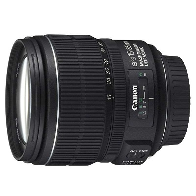

 换算为35mm规格后能够覆盖约24-136mm视角的标准变焦镜头，具有约5.7倍的变焦比。此镜头的一大特征就是拥有EF-S标准变焦镜头中最短的15mm广角端。换算成35mm规格，具有相当于约24mm的视角，十分开阔。拍摄宏大的风景自不必说，即使是在狭小的室内也可以灵活运用其视角特点创造出更加自由的构图。此外，还能充分利用广角镜头才有的强烈透视效果拍出充满个性的照片。在相当于约50mm视角的标准焦段，此镜头成像效果同样良好。圆形光圈的使用也是充分考虑到图像虚化效果的结果。35mm规格下相当于约136mm视角的远摄端，可以应对大多数日常场景。环形USM超声波马达的采用，使全时手动对焦和高速宁静的自动对焦得以实现。手抖动补偿机构IS影像稳定器具有最大相当于约4级快门速度的补偿效果，即使在昏暗场所或使用远摄焦段拍摄时也能够放心，并可自动识别普通拍摄与追随拍摄，选择合适的IS模式。镜头结构为12组17片，其中包含了3片非球面镜片以及1片UD（超低色散）镜片，镜头设计可谓十分奢华。优化的镜片配置和镀膜可以有效抑制鬼影和眩光的产生。通过对多种像差进行良好的补偿，使得整个变焦区域内都具有稳定的画质。
| 镜头焦距 | 15-85mm |
|---|---|
| APS-C画幅下的35mm规格换算焦距 *1 | 约24-136mm |
| 镜头结构 | 12组17片 |
| 光圈叶片 | 7片（圆形光圈） |
| 最小光圈 *2 | 22-38 |
| 最近对焦距离 | 约0.35米 |
| 最大放大倍率 *3 | 约0.21倍 |
| 驱动系统 | 环形USM超声波马达 |
| 手抖动补偿效果 | 约4级 |
| 滤镜直径 | 72毫米 |
| 最大直径及长度 | 约Φ81.6×87.5毫米 |
| 重量 | 约575克 |
光圈值：f/8
快门速度：1/250秒